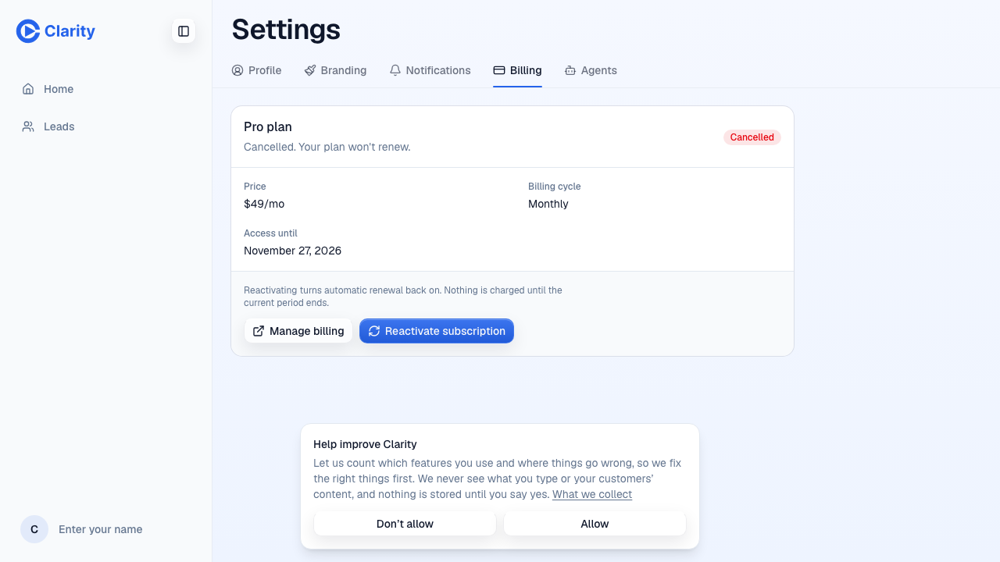
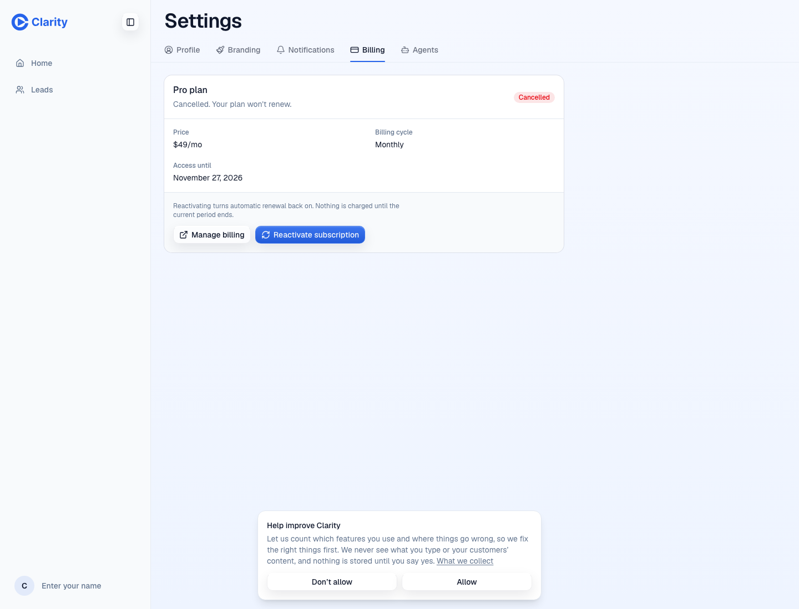
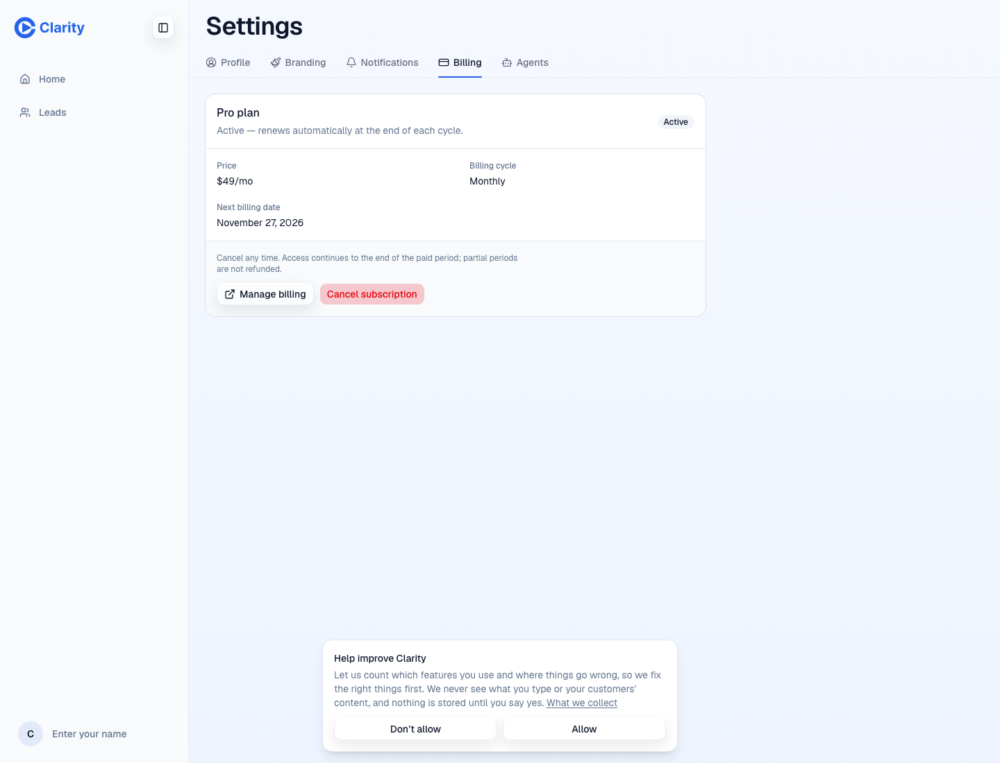
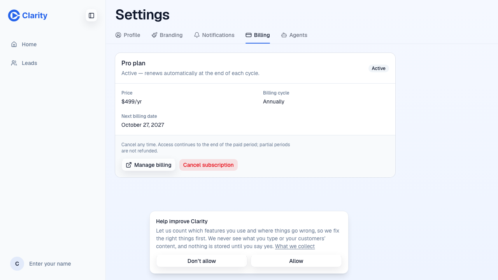
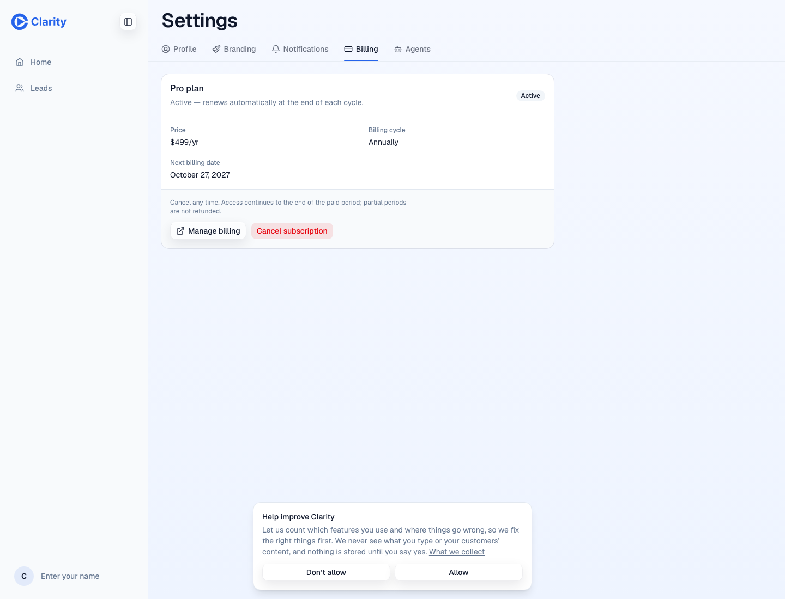

PR 1571. Stripe Sandbox app checks passed. Dashboard checks and signed webhook replays remain unverified.
Branch kernel/1503-billing. Staging start and end SHA: 9eee3f7794464c540e2171c5ae60de4185aa51c7.
Test account emails and Stripe identifiers are omitted from this public copy.
| Step | Main baseline | Branch |
|---|---|---|
| A monthly checkout | 200; return 302 success. Active Pro monthly. | 200; return 302 success. Active Pro monthly. |
| A cancellation | 200, data.ok. Cancelled; access until November 27. | 200, ok. Cancelled; access until November 27. Same subscription and period end. |
| A reactivation | 200, data.ok. Active; same subscription and period end. | 200, ok. Active; same subscription and period end. |
| B annual checkout | 200; return 302 success. Active Pro annually. | 200; return 302 success. Active Pro annually. |
| Duplicate checkout | 409, error: Subscription is already active. | Native and legacy 409. Native code/reason/message; legacy error unchanged. |
| Return replay | 302 success; unchanged subscription. | 302 success; unchanged subscription. |
| Invalid session | 302 checkout=unknown. | 302 checkout=unknown. |
| Unsigned webhook | 400, Invalid signature. | 400, Invalid signature. |
| Legacy reads | Account and subscriptions returned 200. | Account, subscriptions and payment-method list returned 200. |
| Dashboard and signed webhook replays | Unavailable. | Skipped. No accessible signed-in Dashboard. |
The new Billing screen used billing_account_get, billing_subscriptions_get, billing_checkout_start, billing_subscription_cancel and billing_subscription_reactivate. Successful actions returned 200. Duplicate checkout returned 409. The visible billing behavior matched the baseline. New accounts have different subscription IDs and later period-end timestamps.
Checkout success response bodies were not retained during cross-origin navigation. The annual request payload was not retained. Annual price and resulting cadence were verified.
Main

Branch

Main
Branch

Main

Branch
